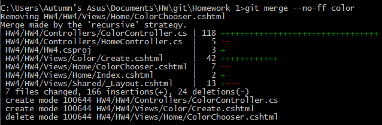

This is a Blog Post for Homework Assignment #4
This will be a demo for Homework Assignment #4
This is a Repo for Homework Assignment #4
Basically, to begin with, you just navigate through Visual Studios various set up steps. For this assignment, we wanted to create a blank ASP.NET MVC (Framework) project. So that's what I did!
After getting the project created, it's just a matter of situating things correctly in the solution view. You have to create a controller, then create a view. The controller navigates around the views. For the controller to navigate to the pages, each view needs a custom function in the controller (as such):
public ActionResult Index()
{
return View();
}
To change branches: git checkout branchname
To change to a new branch: git checkout -b newbranch
To push to the branch: git push origin branchname
To set the url of the repo: git remote set-url origin github.com/url
Though this is all stuff we've covered before, but I like double checking that I have it all compiled in one place.
I decided to start with the mile converter. Initially I just copied the format given to us by the example (it's nice not having to design something! I get way too caught up on it). After I had all the base elements down, I just ensured that the form's method was GET.
This gives us query strings in the url. Using those, we can extract the user submitted info and do some calculations. For this part of the problem, we wanted to access them using the Request object (as opposed to paramaters, see the POST section). Getting them is pretty easy, in the controller object you can just check for query strings using their names.
string givenunit = Request.QueryString["unit"];
double givenmiles = Convert.ToDouble(Request.QueryString["miles"]);
I needed to add a bit at the bottom of the page if the user had made some kind of input and submitted it. To do that, you just need to use a bit of Razor. In this case I just needed to check if my calculation variable was empty, and if it wasn't, to append the sentence that showed the user the result.
@if (ViewBag.message != null)
{...}
This one felt a little more complex than the prior problem, but that's probably just because things that involve graphics tend to be a little bit tricker (mostly due to disuse for me). For this problem, we needed to let the user submit two hex color values, then mix those two colors up. In the process we also had to show squares of the color
To begin, I had to make up the basis of the page. For this section of the assignment we were to use Razor to make the form. The formatting is a little different than the traditional html.
@using (Html.BeginForm("ColorChooser", "Home", FormMethod.Post))
{
@Html.Label("firstcolor", "First Color")
@Html.TextBox("firstcolor", null, htmlAttributes: new { @class = "form-control" })
}
After getting the actual page elements down, I decided to initially focus on how I was going to break the colors up. There may have been a more elegant way to do it, but in the end, I broke up each hex number into three ints. After I had those, I used one of the functions provided to convert it to a color. In a move that felt a little redundant, I then translated it back to a hex color.
firstred = Convert.ToInt32(firstcolor.Substring(1, 2), 16);
firstgreen = Convert.ToInt32(firstcolor.Substring(3, 2), 16);
firstblue = Convert.ToInt32(firstcolor.Substring(5, 2), 16);
first = Color.FromArgb(firstred,firstgreen,firstblue);
firsthex = ColorTranslator.ToHtml(first);
I figured that I needed too anyways to help with adding the two colors together. The code for that was pretty straightforward as a result (add the reds, add the greens, add the blues, then turn that into it's own color object, then convert that to hex). To display the colors, I used an html canvas with the background color set to the hex colors that I generated.
(forgot to copy it this go around)
In the process of all of this, I needed to access the user's input. I used Post instead of Get in this section, and also stored them as paramaters.
public ActionResult ColorChooser(string firstcolor, string secondcolor)
{...}
Overall, it was fairly straightforward!
I decided to get the bulk of the work done on both pages before going back and double checking for validation.
(Oh also I correctly merged it this time, I hope)
